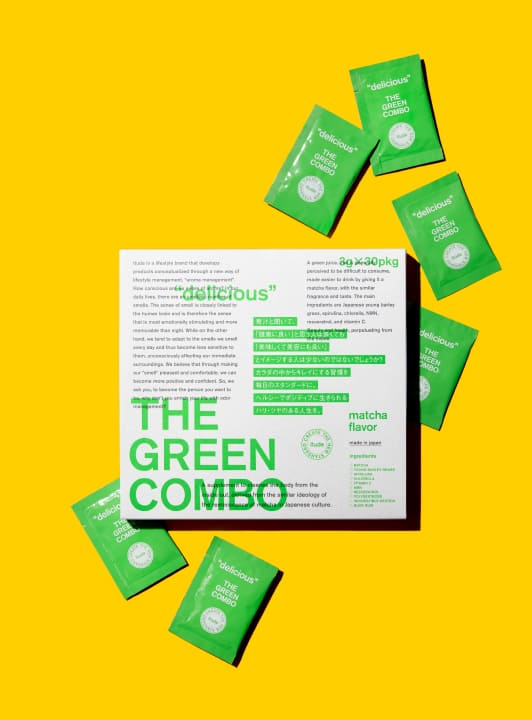
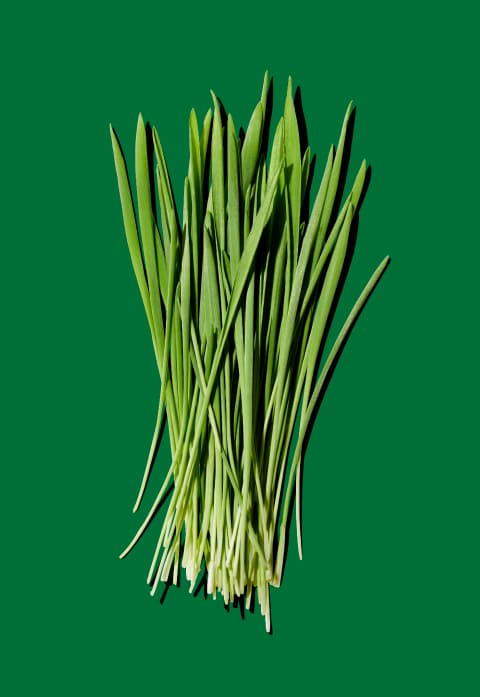
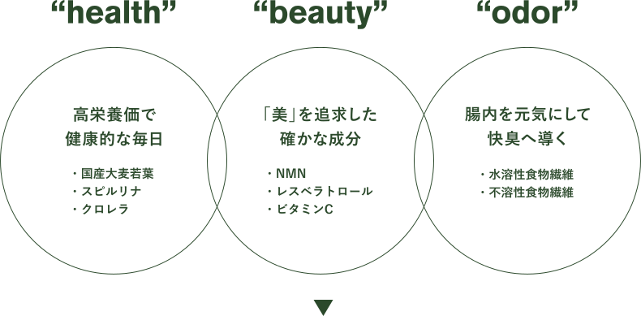
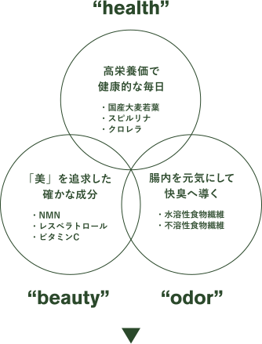
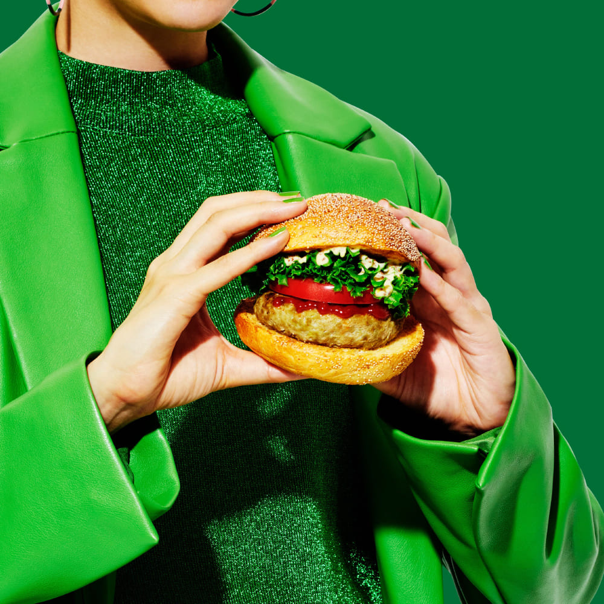

毎日飲みたくなる！
だって美味しいから。
続けられるかどうかなんて
悩む必要がない。
それがザ・グリーンコンボ。
健康に良いことってなぜか長続きしない。
それって誰しもが一度は経験したことがあるはず。そんな人にこそぜひ試してほしくて、試行錯誤を繰り返し誕生したのがこのザ・グリーンコンボです。
「健康・美容・体臭」この3つに関する悩みを同時にアプローチできたら、そんな最高なことはないですよね？ それを叶えてくれるのはザ・グリーンコンボだけ。単に栄養を補うだけの青汁ではありません。体の内側からの改善を意識して、腸内環境へもアプローチ。
さらに、今話題の美容アプローチ成分「NMN」を25mg配合することで、今までにない新しい青汁のインナービューティーサプリメントとなりました。
Odor
management
自分のニオイには気づけない！？
人は日常的にかいでいるニオイには順応してしまい、感じにくくなってしまいます。それなのに、他人のニオイに敏感に反応してしまうことってありませんか？
それってつまり、自分が発するニオイも誰かに影響を与えていることがあるのかも！ 何のケアもしなければ、年齢と共にどんどん強くなっていくのが体臭。男性の方が女性よりも強い傾向にあり、なんとそれは10代後半から強くなるという話も。
ザ・グリーンコンボは、腸を元気にして、幅広い年代の「ニオイ」悩みを解決へと導きます。
What is
the green
combo
Do you like Matcha?
抹茶は美味しいだけじゃない！
美味しさと美容効果の両立を追求した結果、抹茶フレーバーにたどり着きました。
今や海外でも大人気の抹茶。エイジングケア※をはじめとする美容に、その効能はスーパーフードとも呼ばれるほど！
青汁は美味しくない？ そうイメージする人にこそ飲んでほしい。一回飲めば青汁へのイメージがガラッと変わるはず。
※年齢に応じた栄養面によるケア
The green comboの3つの特徴
The green comboの
3つの特徴
健康的な毎日を送るための
ベースサプリメント
大麦若葉をはじめ、栄養価の高いスピルリナやクロレラなどのグリーンスーパーフードをバランス良く配合。ミネラル・ビタミンはもちろんのこと、5大栄養素全て摂取することができます。どうしても不足してしまいがちな野菜や、加齢による健康不安の解消をサポート。
“health”

ハリツヤのある、
自信に満ち溢れた毎日へ
今や美容意識は男女関わらずどの世代にも共通しているもの。
だからこそ、確かな美容成分にこだわって開発しました。NMN（純度99.5％以上）やレスベラトロール、ビタミンCなど配合。体の内側からキレイを目指します。
“beauty”

毎日の習慣でスッキリ！
腸を元気にして、
爽やかなカラダ作りをサポート
ダブルの食物繊維※が不要物を体外へと押し出し、快臭へ導きます。
“odor”
not just
drinking
料理にだって使えちゃう！
青汁は飲むだけだと思っていませんか？ 実は料理にも使えるのです。飲んで美味しい青汁なら料理との相性も抜群！
かけるだけ、混ぜるだけ、など、その活用方法は意外にも簡単。あれ？ そういえば今日青汁飲んでいないかも、、そんなときは青汁を使った料理にチャレンジしてみましょう! ほんの少しのアレンジで、飽きることなく美容と健康の維持ができます。
recipe
青汁ポタージュ
（2～3人分）
| 材料： | |
|---|---|
| 青汁 …… ２袋（６ｇ） | 水 …… 200cc |
| じゃがいも …… 大１個 | コンソメ顆粒 …… 小さじ２ |
| 玉ねぎ …… 1/2個 | 牛乳（または調整豆乳） …… 200cc |
| バター …… 10g | |
作り方：
- ① じゃがいも、玉ねぎは皮をむき薄切りにする。
- ② 鍋にバターを入れ中火にかけ①を炒め、玉ねぎがしんなりしたら水とコンソメを加え、じゃがいもが柔らかくなるまで煮る。
- ③ ②をミキサーにかけ滑らかになったら、先ほどの鍋に戻す。
- ④ 牛乳に溶いた青汁を③に加えよく混ぜ、弱火でひと煮立ちさせる。（焦げやすいので混ぜながら火にかける）
トッピングにオリーブオイルやクルトン、パセリ、ブラックペッパーなどをかける。
青汁トルティーヤ
（2人分）
| 材料： | |
|---|---|
| ＜トルティーヤ＞ | ＜ケイジャンチキン＞ |
| 薄力粉 …… 200g | 鶏むね肉（皮なし） |
| オリーブオイル …… 大さじ１ | にんにくすりおろし …… 小さじ1/2 |
| 塩 …… 小さじ1/2 | 塩 …… 小さじ1/2 |
| 水 …… 100cc | オールスパイス …… 小さじ1/2 |
| 青汁 …… ２袋 | ナツメグ …… 小さじ1/4 |
| パプリカパウダー …… 小さじ１ | |
| チリパウダー …… 少々 | |
| 粗びき黒コショウ …… 少々 | |
| オリーブオイル …… 大さじ1/2 | |
作り方：
- ① 鶏肉にフォークで穴をあける。ポリ袋にケイジャンチキンのすべての材料を入れ鶏肉によく揉みこむ。（１時間から１晩冷蔵庫で味をなじませておく。）
- ② ボウルにトルティーヤの材料をすべて入れヘラで混ぜ合わせ、まとまってきたら手で約５分捏ね、ラップを巻いて室温で30分置く。
- ③ フライパンにサラダ油大さじ１（分量外）をひき、弱火で①を焼く。（蓋をしてじっくり焼くと焦げにくい。）
- ④ ②を８等分にし、綿棒でできるだけ薄くのばしフライパンで中火で焼く。
- ⑤ ④と③とお好みの野菜をのせ、ライムをしぼり巻いてたべる。
青汁パテのハンバーガー
（2人分）
| 材料： | |
|---|---|
| ＜パテ＞ | バンズ …… ２個 |
| 豚ひき肉 …… 150g | トマト …… 1/2個 |
| 玉ねぎ …… 1/4個 | レタス …… 2枚 |
| 卵 …… 1/2個 | |
| 青汁 …… １袋（3g） | ＜ソース＞ |
| 塩・胡椒 …… 少々 | マヨネーズ …… 大さじ１ |
| ケチャップ …… 小さじ２ | 粒マスタード …… 大さじ１ |
| ナツメグ …… 少々 | |
| パン粉 …… 大さじ２ | ケチャップ …… 大さじ２ |
| 牛乳 …… 大さじ１ | |
作り方：
- ① 玉ねぎはみじん切りにする。
- ② ボウルに①とパテの材料全てを入れよく練り、２等分にして成形する。
- ③ フライパンに油（分量外）をひき、②を中火で焼き、焼き目がついたらひっくり返し、蓋をして弱火で火が通るまで焼く。
- ④ バンズを焼き、③をのせケチャップ、輪切りにしたトマト、レタス、混ぜ合わせたソースをかける。
the green
combo
The green comboのこだわり
The green combo
のこだわり
 get
healthy
for
your life
はじめて青汁を飲む人、これまで飲み続けられなかった人、全ての人に届けたい。 そんな想いで作られた「THE GREEN COMBO」は、サッと溶けて飲みやすい、抹茶風味の美味しさにこだわった青汁です。さらに、美容と快臭にもアプローチして、とことん追求しました。
今日明日の悩みを解消し、10年後も思い描くあなたでいるために、今すぐに始められることがここにあります。 美味しいから続けられる、それだけのこと。美味しい毎日から健康的な毎日を手に入れましょう！
about Itude
about Itude
まだ標準化されていない価値に着目し、物事をリフレーミングという発想で、時代にあった価値観へアップデートします。
Itudeは人々の顕在化したコンプレックスを個性として受け入れらるために、感性を刺激するプロダクトで、社会に変化をもたらします。